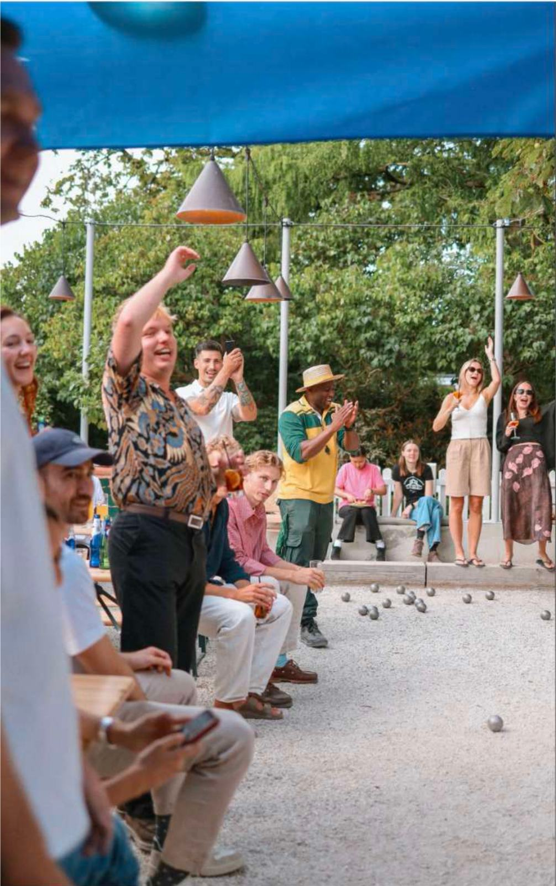
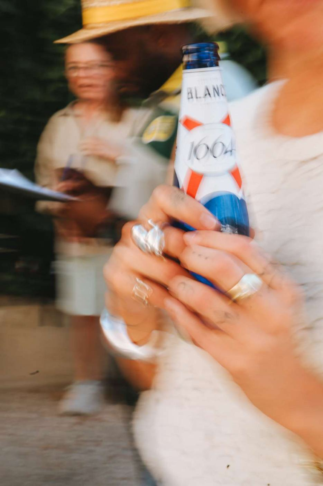

1664 Blanc × Boulebar
Brand partnership and social first. I developed and pitched a summer partnership between 1664 Blanc and Boulebar from scratch, and ran a Sunday pétanque series through the summer.
All the visuals were shot by me, and everything was organic. Featured on The Jungle List.
257%growth in event attendance
Plan something like this


